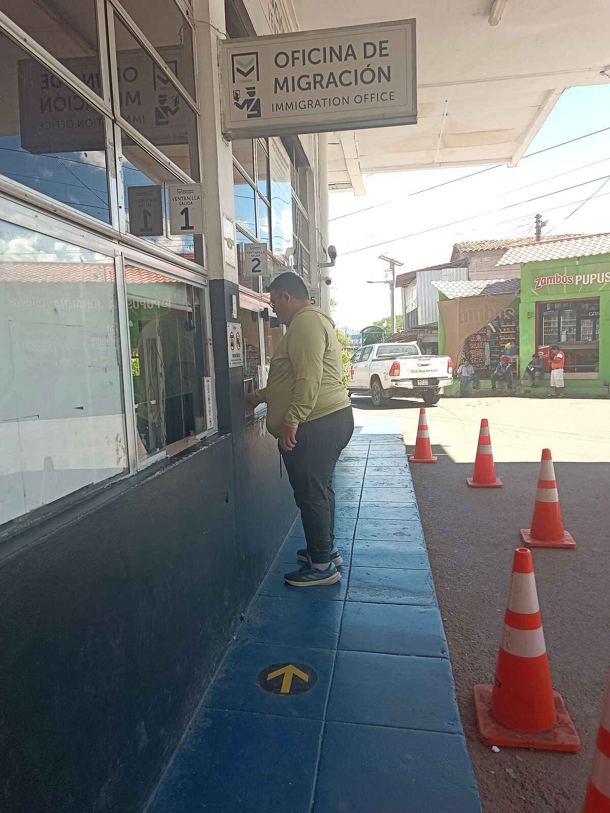
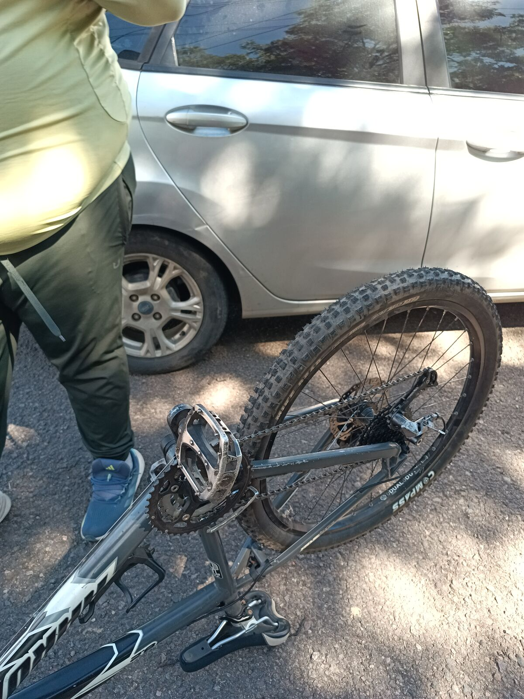
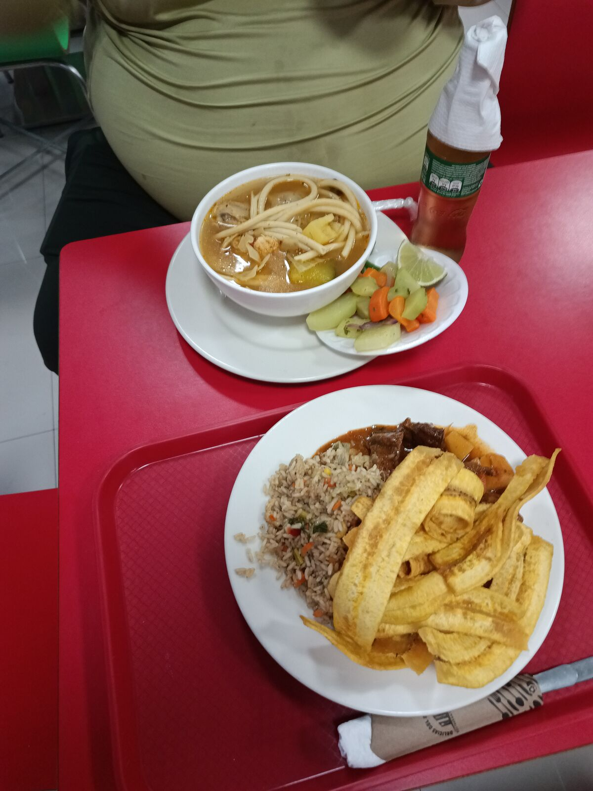
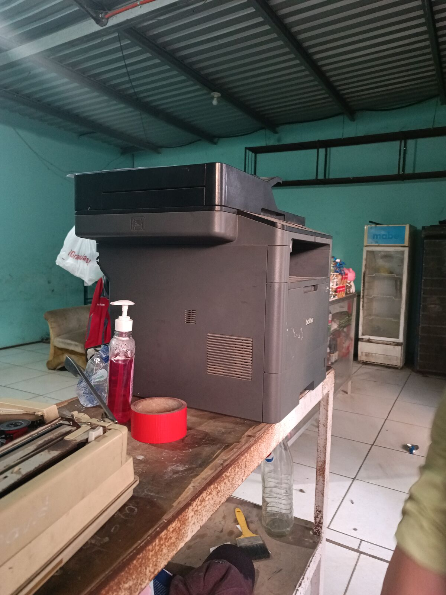
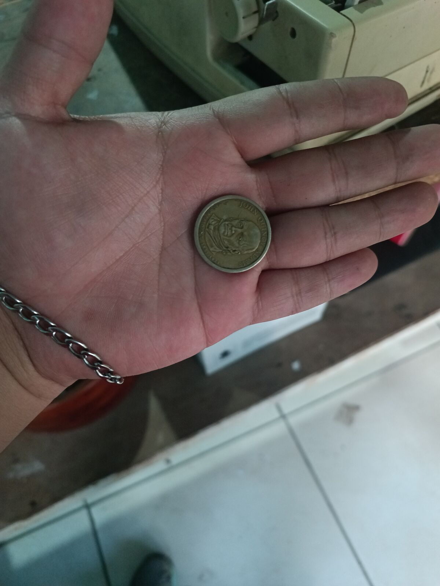
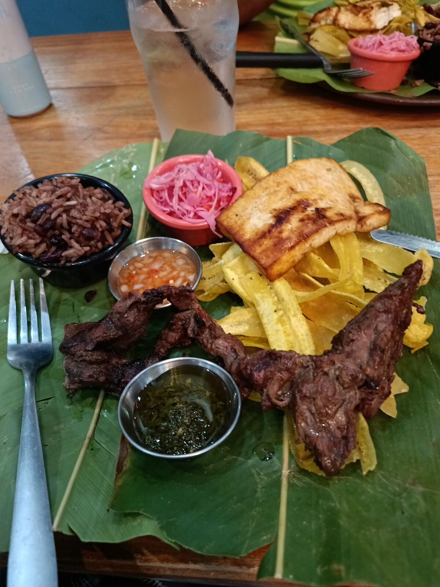
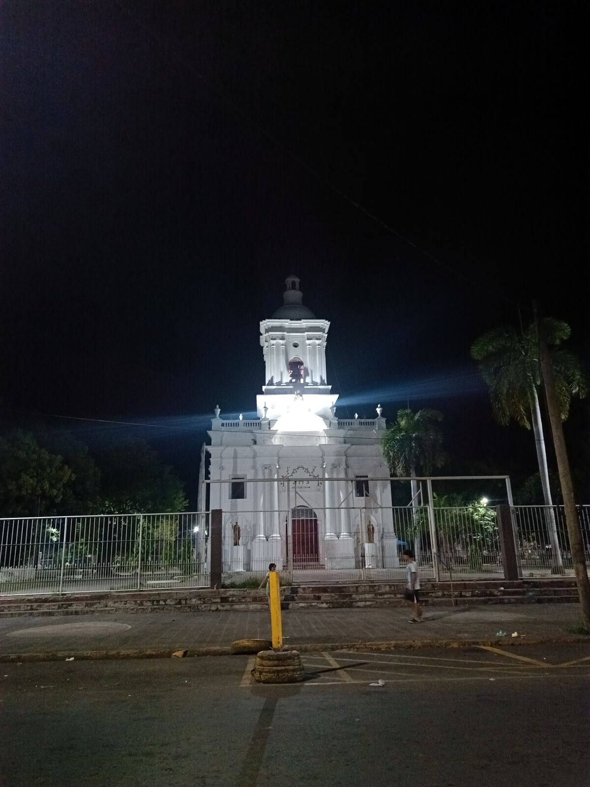

Nos quedamos oficialmente sin dólares
Salimos de San Miguel a eso de las 11 de la mañana. El plan era pasar a San Lorenzo, en Honduras, almorzar, ir al puerto y encontrar un lugar cerquita para pedalear. En esta parte no hay mucho que destacar, más allá de que, efectivamente, solo en El Salvador está señalizada la ciclovía.
Llegamos a la frontera entre El Salvador y Honduras a eso de la 1 o 2 de la tarde. Aquí pueden ver a José haciendo cola en migración. Es interesante que en El Salvador no sellan la entrada ni la salida en los pasaportes, solo te dan unos tickets, y siempre da cosa que te los quiten, porque uno no sabe qué pedo con eso. Así que de ahora en adelante le vamos a tomar foto a los papelitos que nos den, para tener un archivo.

Pasamos al lado hondureño y, como puros nuevos, no vimos que nadie nos detuviera ni nada, jajajaja. Le dije a José: «Nombre, tiene que haber algo que indique que sí entramos y que sí vamos a salir». Así que preguntamos. Él se metió a un edificio bastante bonito y me manda un mensaje: «Simón, sí están sellando, aquí estoy haciendo cola», jajajaja. Estacioné detrás de un pickup, bajamos e hicimos cola unos 10 minutos… para darnos cuenta de que estábamos en la cola de salida, JAJAJA, no en la de entrada. Fuimos al otro lado y nos sellaron: huellas, foto, «¿a qué se dedica?», todo el proceso de siempre, súper eficiente. No nos revisaron el carro ni nada. He de decir que en la frontera de El Salvador sí nos pararon y revisaron el carro, pero ya en Honduras no.
Seguimos hacia San Lorenzo. Había una recta bien bonita y decidimos pedalearla; aquí pueden ver el video. Como la última vez, nos dimos cuenta de que es más peligroso, para el carro y para el que pedalea, ir detrás todo el tiempo, y más en una carretera de tráilers. Así que José se bajó y empezó a pedalear, y yo me adelantaba casi cada kilómetro para no estorbar. Había subidas, bajadas y un calor abrasador, hasta que decidimos guardar la bicicleta, después de unos 5 km pedaleados. Ya se está notando el cansancio de estos días. Y eso que descansamos en San Salvador… pero realmente no descansamos: yo me fui a meter al tráfico y José también, jajaja. Así que la verdad no hemos trabajado como se debe estos días.

Dejando atrás a José, empecé a avanzar y había un retén, jajajaja. El policía me pide la licencia y la tarjeta de circulación, que obviamente llevo digital, porque ¿quién la tiene física? Y me dice: «Ahh, mira, jaja, andás sin cinturón, te voy a poner tu multita», jajajaja. Y yo: «Nombre, poli, no sea así. Me acabo de subir al carro, hace unos 100 metros, y ando viendo a mi amigo en bici, cuidándolo». Y ahí estuve diciéndole: «No sea mala onda, poli», jajajaja.
Hasta que llega José, y el poli me dice: «Ahh, ¿pero agua no tenés ahí?». Y yo: «Nel, pero le puedo dar suero», jaja. «Nombre, agua, agua». Y yo: «Jaja, no, poli, perdón, si ni efectivo tenemos», AJAJAJA, yo cuidando mis 50 centavos de dólar. Al final me dejó ir; solo me dijo: «Ponete el cinturón, pues».
Después de eso sí había cierta urgencia, porque ese día salimos un poco tarde del hospedaje y eran 5 horas de camino. Por fin llegamos a San Lorenzo, pero ya eran las 3 de la tarde, así que le dije a José: «Mira, no quiero manejar de noche». He tenido malas experiencias de noche en Guatemala: carreteras sin señalizar, gente con reflectores de estadio en sus carros que lo dejan ciego a uno. Así que mejor antes que después, JAJAJA.
Encontramos un lugar bien interesante en un centro comercial. Los centros comerciales son bien distintos en cada país: uno está acostumbrado a lugares cerrados con un montón de tiendas, y aquí son más bien plazas abiertas alrededor del parqueo. «Las Delicias del Puerto», algo así se llamaba. Por todo el desgaste, le sugerí a José que tomara una sopita para recuperarse: fue sopa de pollo, y para mí un estofado de res que de verdad estaba rico. Comimos en 10 minutos y nos fuimos hacia la frontera de El Guasaule. Entrando a Choluteca encontramos un puente precioso; aquí lo ven en el video. En Honduras sí nos sellaron el pasaporte, así que la colección va creciendo.

Por fin llegamos a la frontera y empezó la pesadilla. Pasamos el puesto hondureño, todo bien, todo correcto, y al entrar al puesto nicaragüense nos detienen y nos piden los papeles. La cosa es que querían la tarjeta de circulación impresa, jajaja. ¡IMPRESAAAA! Que si no, no podíamos pasar. Y fue tipo: «¿Pero aquí dónde podemos imprimir?». «Allá del otro lado pidan ayuda». Y nos regresaron al lado hondureño.
Mientras íbamos subiendo el puente había varios policías, y una de ellas nos detiene y nos dice: «Vas rápido, va, vas rápido». Y yo: «No, oficial, perdone si le pareció, pero vamos tranquilos». Y me lo repitió como tres veces, AJAJAJA.
Regresamos al lado hondureño a darle vueltas a todo hasta que encontramos (aquí lo ven) un lugar con una impresora en medio de la nada. En el mapa decía que había una gasolinera cerca, y fuimos antes, según nosotros, a sacar lempiras para pagar la fotocopia, AJAJ. Esa gasolinera estaba más abandonada que las carreteras de Guatemala y no había nada, así que dijimos: «Bueno, aunque nos cobren unos 100 quetzales por imprimir la tarjeta de circulación, es lo que toca por pendejos», JAJAJA.

No les había contado, pero al llegar a la frontera había una cola de casi 1 km de camiones esperando pasar. Tuve que ponerme en contra de la vía para poder avanzar, porque los camiones no se iban a mover hasta las 6 de la tarde, pero los carros livianos sí podían pasar, así que bueno, jajajaja. Encontramos la fotocopiadora y nos estacionamos entre dos camiones. Le preguntamos a la señora si aceptaba dólares y nos dijo que sí. Nos imprimió la tarjeta y nos cobró los últimos 50 centavos, AJAJAJ. José se sacó un dólar de la mochila y ella le devolvió 15 lempiras, que son unos 50 centavos de dólar. Así que, oficialmente, nos quedamos sin los primeros y únicos 5 dólares que llevábamos hasta este día.

Regresamos a la frontera, y eso nos llevó unos 20 o 30 minutos. Mientras hacíamos cola para entrar a Nicaragua, varias personas que trabajan ayudando informalmente a los que andan perdidos como nosotros, jajajaja, nos decían que había caminos mejores para no esperar a los camiones: uno era irnos por otro lado y pasar el río, jajaja, y otro, subirnos a la banqueta, JAJAJAJA, porque tenía el ancho para carritos pequeños. Pero no nos quisimos arriesgar, porque, de nuevo, esto es un proceso de largo plazo: si por avanzar 20 metros se rompía algo del carro, no valía la pena.
Llegamos, pasamos el puente y la primera inspección. Le digo a la poli: «Ya regresamos de imprimir». Y me dice: «Ahh, yo hambre tengo, ¿comida no cargan por ahí?», JAJAJAJAJAJAJAJAJA. Se rió, nos revisó todo y pasamos. Es bien interesante cómo el mismo proceso, pero sin ayuda ni guía, puede tardarse tanto.
Antes de llegar a migración anduvimos dando vueltas, perdidos, porque no se entendía a dónde teníamos que llegar con el carro ni dónde estaba la oficina. Al final nos ayudó una persona y llegamos. Nos pidieron pasaporte, razón de la visita y números de teléfono, y nos tomaron fotos y huellas, como siempre. Luego teníamos que registrar el carro, pero yo no entendía ni cómo ni dónde, así que pregunté cada cosa. Para no hacerles el cuento largo: en el proceso del carro pasamos hora y media, tuvimos que comprar un seguro y listo.
Ya era de noche, así que veníamos algo lento. Llegamos a Chinandega tipo 8 de la noche, y aquí también, jajaja: el amigo de José nos quería llevar a un lugar que estaba súper lleno. Entre una cosa y otra fuimos a dejar el carro al hotel y llegamos a donde nos invitaron a comer. Y vean qué rico, jajajaja: eso parecía más almuerzo que cena. El queso de Nicaragua es increíble, qué belleza, qué ricura, jajaja. Estuvimos hablando un buen rato, regresamos al hotel y nos dimos cuenta de que estábamos súper cansados. Por eso estoy escribiendo el blog hasta hoy.

Chinandega es una ciudad bastante bonita. Vamos a tener que inventar un término para este tipo de ciudades. En Guatemala uno llega a pueblitos que tienen su magia, cierta identidad, no solo por los pueblos indígenas que les dan colorido, sino por sus costumbres. Aquí, en Chinandega, en San Lorenzo e incluso en San Miguel, las ciudades son grandes, pero creo que como solo íbamos de paso, no nos quedamos lo suficiente como para que nos terminaran de atrapar. No me malinterpreten: es bonito, bastante bonito. Y sorprendido estoy de que, efectivamente, tenemos las peores carreteras de Centroamérica, JAJAJAJA.

Pero las ciudades son bien parecidas entre todas, y qué bueno, porque eso quiere decir que tenemos más cosas en común y uno se siente bien en todos lados. Nunca nos hicieron desprecios en ningún lugar. Eso sí, el calor… pero esa será otra historia.
Hoy, en el séptimo día, vamos a descansar, trabajar y hacer lo que nos trazamos la semana pasada. Les seguiremos contando qué tal nos va.
👆 Toca o haz clic en cualquier punto del mapa para leer el capítulo de ese día.